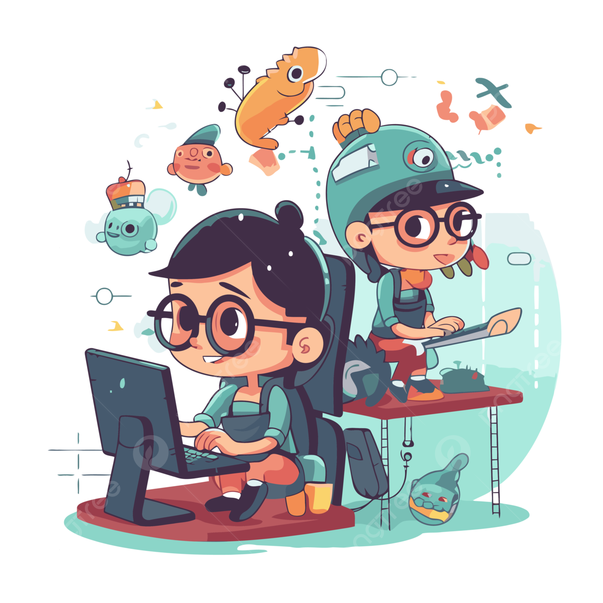
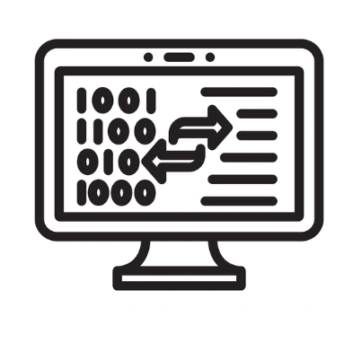
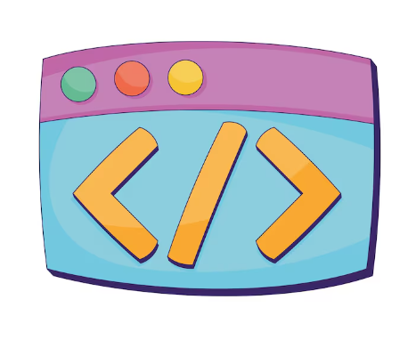

Blog de David Pinzon
Conclusiones sobre la especificidad de CSS
En CSS, la especificidad es el método que establece qué estilos se implementan cuando Distintas normas tienen impacto sobre el mismo elemento. Es importante entender este concepto. debido a que facilita la organización del código y previene discrepancias entre estilos. A lo largo de este ejercicio, comprendí que los selectores más específicos tienen mayor prioridad. en lo que respecta a los generales, lo cual contribuye a una mejor gestión del diseño de una página web.
Selectores avanzados que me costaron entender
- Pseudo-clase :hover: cambia el estilo cuando el usuario pasa el cursor sobre un elemento.
- Pseudo-elemento ::before: permite agregar contenido visual antes de un elemento.
Galería de imágenes



Explicación de Mobile-First
La metodología de desarrollo web conocida como Mobile-First consiste en diseñar inicialmente para dispositivos móviles y, posteriormente, ajustar el diseño para pantallas de mayor tamaño. Esto posibilita la creación de páginas más veloces y optimizadas para dispositivos móviles, los cuales son el dispositivo más empleado para navegar la web. En el proyecto del perfil, se utilizó el enfoque Mobile-First, en el que primero se desarrolló un diseño. vertical para pantallas pequeñas y luego con una media query de 768 píxeles para modificar el diseño a dos columnas usando CSS Grid y organizar el menú con Flexbox en pantallas de escritorio.
Volver al inicio